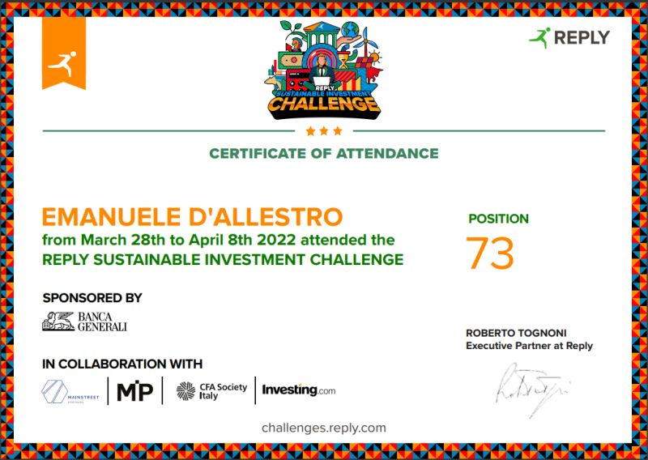

Economics
Economics Competing
A simulated investment competition organized by Reply and sponsored by Banche Generali, challenging participants to manage a virtual €1 million portfolio over one week to maximize profit.
Overview
The Reply Sustainable Investment Challenge was a week-long simulation sponsored by Banche Generali. Participants were challenged to manage a virtual starting capital of €1 million, with the primary goal being the maximization of profit through strategic, real-world financial investments.
Key Highlights
- Achievement: Successfully navigated volatile market conditions during the competition week, achieving a 12.3% portfolio return by strategically diversifying across technology, renewable energy, and healthcare sectors while maintaining risk management protocols.
- Insight: Discovered striking parallels between financial market prediction models and engineering system models—both rely on stochastic processes, feedback loops, and uncertainty quantification. The same mathematical frameworks used in control systems engineering can be adapted to model market dynamics, where investor sentiment acts as a system input and price movements as outputs, creating fascinating interdisciplinary connections between my PhD research and financial modeling.
